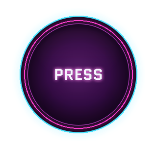

SCORE
0
STREAK
×0
LIVES
❤️❤️❤️
MUSIC
30%
EXIT THIS RUN?
Your current score and progress will be lost.
KEEP PLAYING
MAIN MENU
PRESS
👻
DON'T PRESS!!
PRESS
THE
BUTTON
ONE BUTTON • FAST THINKING • CHOOSE YOUR MODE

RANDOM MODE
Pure reflex. No patterns. No mercy.
›
GRADE-SPECIFIC MODE
Questions matched to your classes.
›
SELECT YOUR GRADE RANGE
CHOOSE YOUR
CHALLENGE
PICK ANY LEVEL YOU WANT TO TRY
EXPLORER
Grades 4–6
›
CHALLENGER
Grades 7–10
›
MASTERMIND
Grades 11–12
›
MACHINE WINS
RANDOM MODE
SCORE
0
SOLVED
0
BEST STREAK
0
PREVIOUS BEST
0
PLAY AGAIN
MAIN MENU